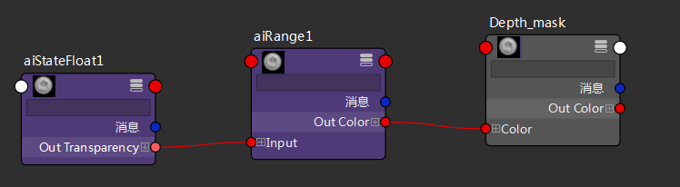
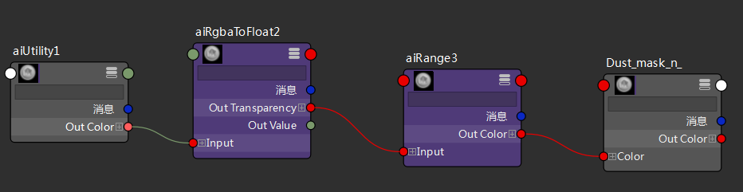
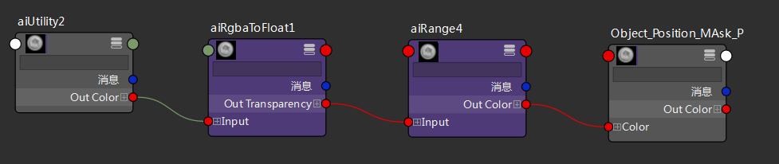

深度、灰尘和 P 位置
本教程介绍如何创建 Z 深度、灰尘和对象位置遮罩，以便在合成软件包中使用这些遮罩对着色效果（例如景深、污垢、灰尘或雪）进行分层。它们组合使用 Arnold 着色器，例如工具、范围和 state_float。非常感谢 Slava Sych 为本教程提供的帮助。
有关对应的场景文件，请单击此处。
创建一个 state_float 着色器。将 variable 参数设置为 ray_length (Rl)。
创建一个范围 着色器，并将 state_float 着色器的输出 连接到范围 着色器的输入。更改范围着色器的以下参数：
input_min：0.6（此值取决于对象与摄影机的距离）。
output_max：1.5（此值取决于对象与摄影机的距离）。
平滑步长(Smoothstep)：启用
请注意，此遮罩直接取决于与摄影机的距离。

创建一个工具 着色器。为工具 着色器设置以下参数：
color_mode：法线(n)(normal (n))
shade_mode：平面(Flat)
创建一个范围 着色器，并将工具 着色器的 Output.G 连接到范围 着色器的输入。启用“平滑步长”(Smoothstep)， 并使用 input_min/max 参数控制遮罩位置。
如果无法将单个输出颜色（输出 G）连接到 DCC 中的输入，请使用 rgba_to_float（模式 G）着色器转化它。

创建一个工具 着色器。为工具 着色器设置以下参数：
color_mode：着色点(P)(shading point (P))
shade_mode：平面(Flat)
创建一个范围 着色器，并将工具 着色器的 Output.G 连接到范围 着色器的输入。启用“平滑步长”(Smoothstep)， 并使用 input_min/max 参数控制遮罩位置。
如果无法将单个输出颜色（输出 G）连接到 DCC 中的输入，请使用 rgba_to_float（模式 G）着色器转化它。
